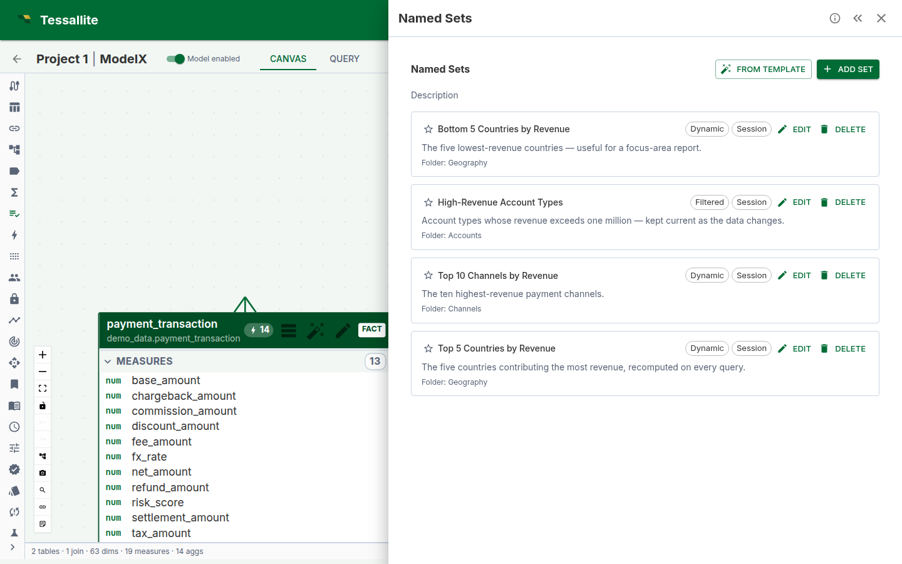

Named Lists (Named Sets)
What this covers
A named list (also called a named set) is a reusable collection of dimension members stored within a semantic model. Named lists let modellers pre-define member selections — top customers, active product categories, regional groupings — that BI tool users can apply as filters, row sets, or column sets without rebuilding the selection each time. This article explains the different types of named lists, how to create and preview them, and how they surface in BI tools and the Excel plugin.

Each card shows the list's type and scope at a glance, a description for the people who will use it, and the display folder it is grouped under. A Dynamic list (Top/Bottom-N) re-ranks itself on every query as the data changes; a Filtered list re-evaluates its rule; a Fixed list always returns the exact members you chose.
Types of named lists
| Type | Description | When to use |
|---|---|---|
| Fixed members | A hand-picked list of specific dimension members. | When the members are stable and known in advance — e.g., a list of strategic accounts. |
| Top N / Bottom N | A dynamic list ranking members by a measure and returning the top or bottom N. | When the list should update automatically as data changes — e.g., top 10 products by revenue. |
| Filtered | Members matching one or more conditions on dimension attributes. | When membership is defined by business rules — e.g., customers in a specific region with orders above a threshold. |
| Advanced MDX | A raw MDX set expression. | When the other builder types cannot express the required logic. Preview is not available for raw MDX; deploy the model and use a BI tool to see results. |
Before you start
- You must have a model open in Model Builder with at least one dimension defined.
- For Top N lists, the ranking measure must already exist in the model.
- For Filtered lists, the dimension must have queryable attributes.
Creating a named list
- Open a model in Model Builder and click Named Lists in the Toolbelt (left sidebar).
- Click Add Named List. The Drawer opens with a blank definition form.
- Enter a Name (internal identifier, must be unique within the model).
- Optionally enter a Display name (label shown in BI tools) and Description.
- Select the List type — Fixed, Top N, Filtered, or Advanced MDX.
- Configure the type-specific fields:
- Fixed: select the dimension, then pick individual members.
- Top N: select the dimension, ranking measure, count, and direction (top or bottom).
- Filtered: select the dimension, then add filter conditions with logic (AND/OR).
- Advanced MDX: enter a raw MDX set expression.
- Click Preview to see the resolved members (not available for Advanced MDX).
- Click Save. The named list is available to BI tools after model deployment.
Previewing members
Click the preview icon on any named list card to see the resolved members inline. The preview runs a query through the Query Router and returns up to 100 members. For Advanced MDX expressions, preview is not supported — deploy the model and query via Excel or Power BI using an XMLA connection to see results.
Using named lists in BI tools
After model deployment, named lists appear as named sets in the XMLA metadata catalogue. In Excel, use CUBESET and CUBERANKEDMEMBER formulas to reference them. The Tessallite Excel plugin provides one-click insertion of these formulas from the Report Builder panel.
Certification and governance
Named lists support the same certification lifecycle as other model entities:
| Status | Meaning |
|---|---|
| Draft | Work in progress; visible to modellers only. |
| Shared | Available to all users but not yet certified. |
| Certified | Reviewed and approved for production use. |
| Deprecated | Scheduled for removal; a replacement may be specified. |
Version history tracks changes to the definition, and impact analysis shows where each named list is used across workbooks and dashboards.